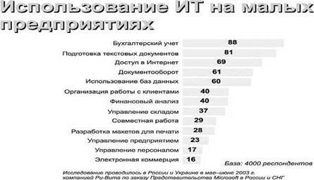
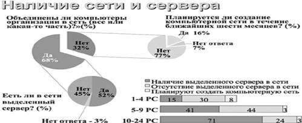
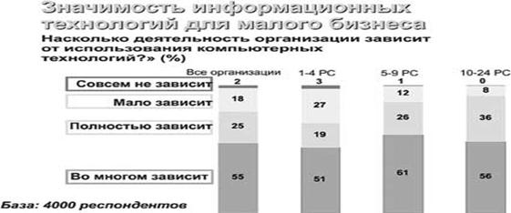
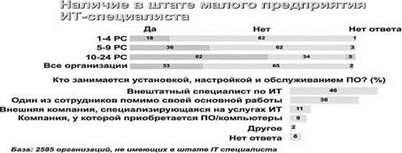

С одной стороны, грустно, что, если уж 45% малых предприятий сосредоточены на торговле, и целых 69% МП имеют доступ в Интернет, только 16% из них воспользовались возможностями электронной коммерции. С другой стороны, какое поле для деятельности! Раз есть подключение, надо приучать к работе через Интернет. Тем более что 40% для организации работы с клиентами IT уже используют. При оценке в 61% уровня использования IT для документооборота и 60% для работы с базами данных, только 29% указали, что используют IT для организации совместной работы. А это значит, что почва для внедрения новых технологий уже подготовлена. Тем более что у 68% МП компьютеры и сервер(ы) уже объединены в сеть, т.е. и аппаратная возможность есть.
Ответ на вопрос о значимости IT для малого бизнеса позволяет сделать косвенную проверку. Ведь согласно данным табл. 3, бухгалтерия компьютеризирована на 88%, а максимальная сумма ответов на вопрос полностью дает от 70% до 92%. Видимо, не хватающие 8% полагают, что смогут вести бухгалтерию на бумажке? Трудами автоматизаторов налоговых инспекций вряд ли это им удастся.
Особенность одна: дело, скорей всего, придется иметь с реальным владельцем. А это человек, каждодневно ведущий войну (или, как изящно выражаются на Западе, отвечающий на вызовы эпохи) с нечестными поставщиками, прижимистыми заказчиками, ленивыми и малоквалифицированными сотрудниками, наездами как официальных, так и неофициальных контролеров, меняющимся (и все не в лучшую сторону) законодательством. Он не разбирается в языках программирования, но знает свои бизнес-процессы. Ведь сам процесс информатизации управления бизнесом является ничем иным как составлением алгоритма бизнес-процесса и переводом его в программу или набор программ. В больших конторах между создателями программного обеспечения и его будущими пользователями стоит когорта специалистов, итеративно перекладывающих реальные бизнес-технологии в алгоритмы по мере своего разумения и растолковывающих программистам, как должна работать программа. А затем эти же специалисты убеждают пользователя, что он должен научиться использовать то ПО, которое ему изготовили, даже если это неудобно, занимает больше времени и требует увеличения персонала. Ну, в большом бизнесе это проходит почти всегда, расходы размажутся по долгой промежуточной цепочке, увеличится стоимость товара, тарифы и т. п. И главное начальство (владельцы) все-таки увидят отчетность и смогут вести учет. А вот в работе с малым бизнесом этот номер редко проходит: нет цепочки, и владелец купит в большинстве случаев лишь то, что ему реально поможет в работе. И поскольку он свои бизнес-процессы понимает и знает, ему проще найти вариант применения ПО, чем армии консультантов.
Косвенным подтверждением приведенному мнению служат данные, приведенные в таблице 6, о наличии в штате МП специалистов в области IT. Итак, в среднем только в 33% МП они есть. При условии, что сети есть у 68%. И за аутсорсингом к компьютерным фирмам обращаются только 11% (либо 20%, если просуммировать две строчки). Значит, либо услуг достаточного качества не хватает, либо стоят они слишком дорого, либо просто не доверяют владельцы малого бизнеса. В любом случае рынок есть, причем не маленький (от 80 до 89%), но вот как на него попасть? Причем объективные тенденции для завоевания рынка МП есть: растет объем данных в цифровой форме, т. е. все большая доля активов предприятий хранится в цифровом виде; растет количество приобретаемой МП компьютерной и сетевой техники; растет количество подключений к Интернет; снижается стоимость техники. Ответ на вопрос о значимости IT для малого бизнеса